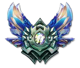

Бронза(Bronze)
Бронза(Bronze)
 Серебро(Silver)
Серебро(Silver)
Золото(Gold)
 Платина(Platinum)
Платина(Platinum)
Алмаз(Diamond)
Мастер(Master)
Претендент(Challenger)

Вы будете получать очки для вашего чемпиона после каждой игры. Количество очков зависит как от эффективности команды, так и от ваших собственных действий. Набирая очки, вы будете поднимать ранг мастерства чемпиона и получать различные награды.

Оценки
На послеигровом экране наведите курсор мыши на шкалу очков мастерства чемпиона, чтобы получить информацию о полученной оценке. Система присваивает оценки, основываясь на ваших успехах в выбранной для чемпиона роли и, что немаловажно, позиции.

Уровень мастерства
Ваш профиль в игровом клиенте обзаведется новым показателем. Уровень мастерства складывается из всех достигнутых вами рангов мастерства чемпионов.

Добивание монстров и их управление, основа, заложенная в игре. Важнее этого, как бы не приятно это слышать, учитывая, что мы играем в боевой экшн, ничего нет. Добивание даёт нам золото, расходуя которые на предметы мы и открываем максимальный потенциал персонажа и его возможности. Не забываем об опыте, так как каждый уровень сам по себе даёт не только +1 к одному из умений, а еще и увеличивает базовые параметры, здоровье, урон, ману и прочие. Каждые 10 минут 100 крипов наша цель. Начальная стадия, пока нет массовых сражений, максимально важна. Идеально до 20–ой минуты добивать 200 крипов, но это достижимо, если противник играет пассивно, и мы уворачиваемся от всех гангов. Новичкам цель 150 до 20–ой минуты. Опять же, игры разные, бывают постоянные сражения. Наша задача – всегда стараться превосходить противника по фарму, даже если он совершает больше убийств.
Добивание. Учимся добивать на каждом персонаже, в различных ситуациях. Особенно под вышкой, ударами и умениями подготавливая монстров к последнему удару. В Лиге расход маны не высокий, поэтому не боимся использовать умения.
Добивание своих (денай). Хоть обычными тычками своих добивать нельзя, эту услугу с удовольствием оказывают вражеские вышки. Когда противника нет на линии, или мы его убили, убиваем вражескую волну, наши миньоны добегают до вышки и с честью умирает там же, не давая опыта и золота противнику. Но особенно после боя, бойтесь вражеского лесника или мид лейнера, которые могут прийти и добить.
Маленькие помощники. Миньоны, особенно на первых минутах игры, наносят вполне внушительный дамаг. Поэтому не завязывайте драку, если рядом бегает группа этих работяг. В тоже время, защищаясь, позиционируйте себя так, чтоб наши миньоны атаковали противника. Таким образом, можно побеждать бои даже с меньшим количеством здоровья.
Особенности Чемпионов. Каждый из бойцов практикует свой стиль игры, ведения боя. Но наиболее ключевое – это его возможности в разные фазы игрового процесса. Наша задача изучить как самого Чемпиона, так и игру против оппонентов. Если мы слабы в начальной стадии, не стоит играть агрессивно, стараемся по максимуму нарастить боевое преимущество, за счёт золота и опыта с монстров. Если же наш герой силён на ранних стадиях, но невероятно слаб в лейте, реализуем это, постоянным давлением и денаем наших крипов, при этом, не подставляя себя под удар от вражеского лесника, либо делаем это рассчитывая на победу в бою 1х2.
Руны, Местерис, Предметы. Никакого креатива, делаем всё по стандарту, диктуемому метой и про игроками. Просто копируем их сборки, от начала и до конца. Собрав что-то по своему, мы элементарно потеряем всё то, что накапливали во время игры, элементарной математической не эффективностью сборки.
Давление. Пассивная игра развязывает руки нашим соперникам, позволяя им гангать наших товарищей по матчу. Наша задача заключается в том, чтобы постепенно кайтить противника, заставляя его нервничать, а также нервничать его тиммейтов, вынуждая последних сместиться к своему товарищу на линию, тем самым выиграв время для своих. Давление мы оказываем как убивая врагов, что сложно, так и зачищая волну, заставляя противника добивать монстров под вышкой.
Помоги другим. Зачастую, в поражении виноваты тиммейты. Мы же, даже выигрывая свою линию, только смотрим на таблицу убийств и смеёмся. Мол, я же выиграл свой лейн, пусть остальные тренируется и делают тоже самое. Это не правильно. Да, выиграв свой лейн мы определённо проделываем немалую работу на победу, но нужно помогать остальным. Мы не сможем выстоять 1х5. Поэтому, убив пару раз нашего оппонента, загнав его в ужасе под вышку, зачищая волну мобов, смещаемся на другие линии.
Калькулируемая агрессия. МОБА игры сложно назвать стратегией, но большая часть сражений имеет пошаговый характер. Мы ударили, нас ударили, мы использовали умение, на нас что-то применили. Поэтому залог успешного финала – холодный расчет. К примеру, выиграли перестрелку с врагом, выйдя с большим количеством ХП (очки здоровья), что дальше? Пару атак, использовали ульт, если он флешнулся, прыгнули нашим флешом, добили с автоатаки, выдержали удар вышки, ушли. И таких примеров можно привести под каждую ситуацию. Помните, что чем меньше у Вас возможностей, в виде маны, умений не на перезарядке, активных заклинаний прерывателей, тем больше шансов на победу. Обратная ситуация если мы этим не обладаем, играем пассивно.
Миникарта. Инструмент, которым пренебрегают новички. И это понятно. Если все свое внимание сосредоточить на крипах и уклонении от вражеских тычек, можно легко не заметить надвигающийся ганг противника. На карту необходимо регулярно, если не смотреть, то хотя бы поглядывать. Зная где противник, особенно вражеский лесник (джанглер), мы можем играть более агрессивно, не боясь, что нам зайдут за спину. А когда не видим врага, не только лесника, но и лейнеров, лучше поберечь себя.
Объекты. Боевой задор ослабляет бдительность, после совершения нескольких убийств мы думаем, что игра уже «наша». Это не совсем правильно. Поэтому победив противника, пока он не появился, фокусируемся на вышках, Драконе и Нашоре. Это принесет куда больше пользы, чем топление на одном месте с малым количеством ХП, без покупки новых артов, на которые мы заработали золото и так далее.
Оценка Ситуации. Любых игроков легко вывести из эмоционального равновесия, особенно тогда, когда их персонажа убивают или мешают фармить. Их глаза закрывает пелена мести и отчаянная и они уже не видят, что происходит в игре. Это одна из сложных игровых составляющих, но важных. Стоит понимать, что жертва себя во имя сноса вышки и привлечения нескольких игроков вражеской команды – отличный тактический ход. Так как: мы стянули на себя 3х игроков, заработали золото команде за вышку, и себе за убийство, открывая возможность для «бесполезной» команды хоть что-то сделать на карте.
Командная игра. Впитав знания, опыт и советы, фокусируясь на своей игре, мы часто забываем об остальных. Но опять же, выиграть игру 1х5 нереально. Нужно помогать напарникам. Но тут не так всё просто. Не стоит разделяться со своей командой, особенно в эндшпиле. Поэтому не поддерживайте откровенно глупые единичные выходы. С другой стороны, если враги давят центр, а мы всю игру тусим в лесу, или на верхней линии, это также не правильно. Всегда необходимо драться 5х5, чтобы решить исход игры.